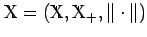
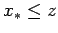
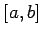
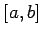

Der erfolgreiche Einsatz des SCHAUDERschen Fixpunktsatzes erfordert die Auswahl einer Menge mit den entsprechenden Eigenschaften, die vom betrachteten Operator in sich abgebildet wird.
In Anwendungen, insbesondere in der Lösungstheorie nichtlinearer Randwertprobleme, handelt es sich meistens um geordnete normierte (aus Funktionen bestehende) Räume und nicht selten um positive, d.h. den betreffenden Kegel invariant lassende, oder isoton wachsende Operatoren, d.h. solche  , für die gilt. Wenn Verwechslungen ausgeschlossen sind, nennt man solche Operatoren auch monoton (s. etwa Abschnitt Monotone Operatoren in BANACH-Räumen).
, für die gilt. Wenn Verwechslungen ausgeschlossen sind, nennt man solche Operatoren auch monoton (s. etwa Abschnitt Monotone Operatoren in BANACH-Räumen).
Seien jetzt  ein geordneter BANACH-Raum mit abgeschlossenem Kegel  und [a,b] ein Ordnungsintervall aus
und [a,b] ein Ordnungsintervall aus  . Ist
. Ist  normal und gilt
normal und gilt  für einen vollstetigen (nicht notwendigerweise isotonen) Operator
für einen vollstetigen (nicht notwendigerweise isotonen) Operator  , dann besitzt T wenigstens einen Fixpunkt in [a,b] (s. Abbildung).
, dann besitzt T wenigstens einen Fixpunkt in [a,b] (s. Abbildung).

Ein weiterer Vorteil der Betrachtungen in geordneten Räumen besteht darin, daß für einen isoton wachsenden Operator  , der auf einem (0)-Interval [a,b] des Raumes
, der auf einem (0)-Interval [a,b] des Raumes  definiert ist und (lediglich) die Eckpunkte a, b in [a,b] abbildet, also den beiden Bedingungen
definiert ist und (lediglich) die Eckpunkte a, b in [a,b] abbildet, also den beiden Bedingungen  und genügt, automatisch
und genügt, automatisch  gilt. Darüber hinaus sind die beiden durch
gilt. Darüber hinaus sind die beiden durch
wohldefinierten (d.h. )) Folgen monoton wachsend bzw. fallend, d.h. und . Ein Fixpunkt x* bzw. x* des Operators T heißt minimal bzw. maximal, wenn für jeden Fixpunkt z von T die Ungleichung  bzw. gilt.
Es gelten nun die folgenden Aussagen (s. Abbildung):
Seien  ein geordneter BANACH-Raum mit abgeschlossenem Kegel
ein geordneter BANACH-Raum mit abgeschlossenem Kegel  und
und  ein stetiger isoton wachsender Operator. Sei mit
ein stetiger isoton wachsender Operator. Sei mit  und . Dann gilt , und der Operator T besitzt einen Fixpunkt in , wenn eine der folgenden Bedingungen erfüllt ist:
und . Dann gilt , und der Operator T besitzt einen Fixpunkt in , wenn eine der folgenden Bedingungen erfüllt ist:
Die wie in (12.201) definierten Folgen  und konvergieren dann zum minimalen bzw. maximalen Fixpunkt von T in .
und konvergieren dann zum minimalen bzw. maximalen Fixpunkt von T in .
Das Konzept der Ober- und Unterlösungen basiert auf diesen Resultaten (s. Lit. 12.17, 12.13, 12.14).